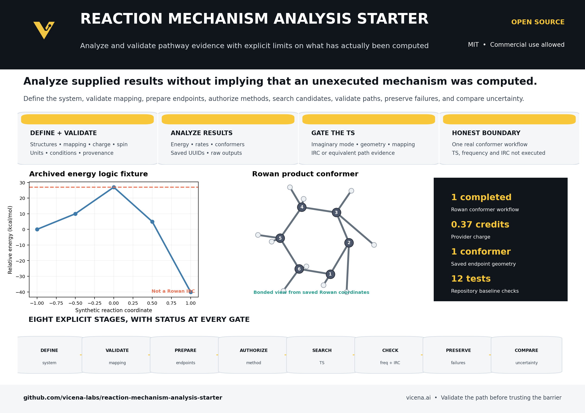

Capability boundary: this project does not yet compute a complete reaction mechanism from reactants and products. Its barrier, frequency, and IRC examples are synthetic fixtures. One real Rowan product conformer workflow is bundled.

Eight-stage guided workflow
1. Define
Reactants, products, charge, spin, and conditions.
Implemented2. Validate
Composition, mapping, units, and provenance.
Implemented3. Prepare endpoints
Conformer generation and optimization.
Partially demonstrated4. Authorize method
Method, engine, solvent, convergence, and budget.
Documented5. Search TS
Scans or double-ended candidate searches.
Not executed6. Validate path
Frequency and bidirectional IRC evidence.
Synthetic gate only7. Preserve failures
Keep rejected candidates and reasons.
Implemented contract8. Compare uncertainty
Methods, experiments, standard states, and sensitivity.
Local analysis hooksExecuted Rowan result

One product conformer search completed. It does not validate a transition state or IRC pathway.
Quick start
pip install -e .[dev,chem] pytest -q python scripts/analyze_archived.py
GitHub repository | Guided workflow | Getting started | TS validation